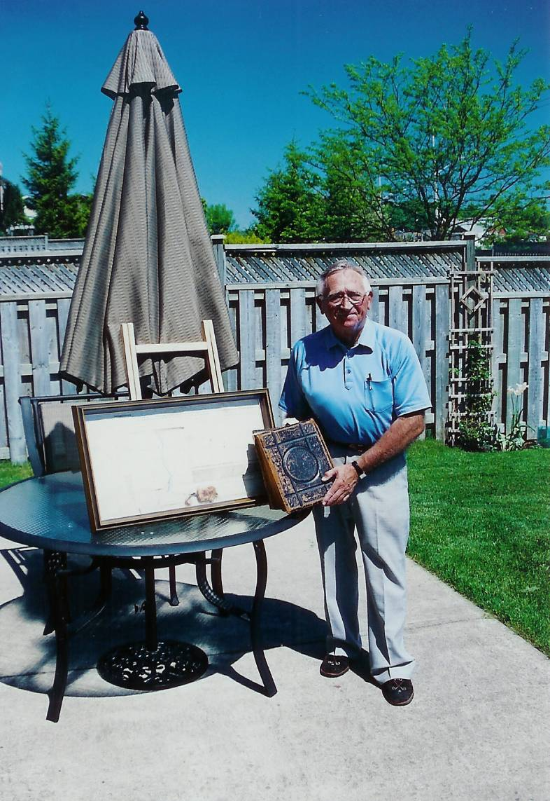

The Family Chronicle
No. 108 December 17, 2005
____________________________________________________________________

Shown above is Arthur Mills, son of Jasper and Sarah (MacLeod) Mills of Hardwicke, NB. Art is holding the family Bible belonging to his Great Grandfather, Alexander Mills; displayed on the table is the original land grant under the authority of King George the Third , dated September 12, 1818, granting 300 acres of land in what is now Hardwicke to James Mills
While in the Miramichi recently, I learned:
Old timers will remember a brook on the McKnight Road near Carmel United Church where we used to drive through and allow the horses to drink, and also soak the wagon wheels to keep the joints tight, Everard MacLean tells me that it was called Sammy John’s Brook – as I recall, it passed through property owned by Sammy John McKnight.
Chatham Grammar School was originally the Chatham Presbyterian College.
Gordon Dick purchased the original school bus from the Godfrey Bros. and transported students from Point Aux Carr and Napan to Chatham.
There was a root cellar on the original Alexander MacDonald property, back of where Neil Watling now lives and we wondered why it would have been so far from the family home.
In 1939, as best I can find out, there was only one place in Black River to buy gasoline and that was from George Adams. He had a hand operated pump and one bought gasoline by the gallon. One pulled close to the tank, told the number of gallons wanted, the gasoline was pumped into a glass chamber at the top of the tank with the number of gallons was measured by eye, then the hose was put into the car tank and gravity did the rest. The next nearest gas tanks were at Robertson’s store at the Bay du Vin bridge or at Doug Campbell’s store at the Richibucto and south Napan road
I only remember the blacksmith shop at Sinclair Williston’s, however, my brothers remember that John Dick also had a blacksmith shop in Upper Black River as well.
Our nearest grocery store was run by George Adams across the river from our place. Down river the next one was at Dilworth MacDonald’s just below the Hexham corner; while John MacLean had a grocery store, Everard thinks it closed in the early 1930’s; Rueben MacLenaghan ran a store at Middle Black River but probably not in 1939; in 1940 Sandy MacNaughton in Upper Black River ran a small store in his house.
I welcome corrections and additional information on any and all of the above.
Remember when:
Mother used a large vanilla bottle, punched holes in the cap, filled it with water and used it to sprinkle clothes when ironing.
Headlight dimmer switches were on the floor boards.
Cars did not have fuel pumps; fuel tanks were mounted in front of the windshield and gravity caused the fuel to flow to the engine.
Movie theatres showed newsreels prior to the main show.
We made pea shooters out of clothespins
Laundry was washed by hand in a tub placed on a washstand. Another tub was placed on the other end of the stand and standing between was a wringer to wring water from clothes before either rinsing or hanging them out to dry.
Drivers signaled their intentions by extending their arm out the window; Arm pointing up meant a right hand turn, straight out meant a left turn and pointed toward the ground indicated slowing down or stopping; making a circular motion told the driver that he could/should pass. Turn signals appeared only after the War.
Cars had a rack at the rear for carrying suitcases and heavy boxes.
Spare tires, and some cars carried two, were mounted outside the car either at the rear or set into the back of the front fenders.
When visitors came, especially in winter, the first task was to stable the horse to provide shelter, hay and water.
Car radiators had to be drained in winter; the first antifreeze was alcohol but it often boiled away and lost its protective use.
One earned spending money by picking up liquor and beer bottles from the ditches.
When crossing the river by horse and sled on a stormy night, one dragged a chain behind to ensure that one was not moving in a circle
Back Issues:
The first hundred issues of the Family Chronicle have now been bound and copies will be placed in the National, NB and PEI Archives and selected libraries. Copies are also available for purchase.
Regular readers will recall that I included notes about my deceased siblings. Shortly and to complete the series, I will add notes about remaining family members – Ken, Norman and myself.
The Family Chronicle (Copyright) is an occasional newsletter published by Don Glendenning and posted on the family website. It is intended to share information about my family, community and the times in which I grew up. While every effort is made to be accurate, errors are likely to occur. Comments, enquiries and information may be sent to 62 Queen Elizabeth Drive, Charlottetown, PEI, C1A 3A9. Tel: 902 892 5859. Email: dglende@auracom.com Web: www.glendenning.net/don